1020A20 crank case oil sump - r + r clean seals for sealant application
- Path
- Procedures > 10 ENGINE > 1020 CRANKCASE SUMP AND COVERS > 1020A crank case oil sump > 1020A20 crank case oil sump - r + r clean seals for sealant application
- Kind
- repair procedure (removal / refitting; the operation number is the code)
- Applies to
- all engines; all production periods
- Interactive page
- https://sloeber94.github.io/elrnDB-lYpsln/en/#/2428866
Applies to: engines: 1.2 8v; all production periods
 Removing
Removing
 Refitting
RefittingPosition the vehicle on the ramp.
Proceed with removal 1048A10 air cleaner filtering element - replace .
Proceed with removal 1072C44 exhaust manifold heat shield on bulkhead - r+r .
Proceed with removal 1072C16 exhaust manifold with catalytic converter - r r .
Proceed with removal 7055B66 Engine compartment DUST SHIELD protection in right front wheel arch - R.R. .
Proceed with removal 2110A60 manual gearbox/engine coupling bracket - r+r .
1. Undo the bolt (1a) and remove the bracket (1b) supporting the exhaust manifold mount with catalytic converter.
2. Undo the bolts (2a) and remove the flywhell protection (2b).
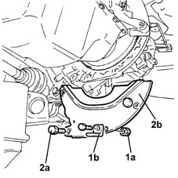
Applies to: engines: 1.2 16v; all production periods
Removing
RefittingProceed with removal 4450B12 front or rear wheels (two) - r+r .
Proceed with removal 7055B66 Engine compartment DUST SHIELD protection in right front wheel arch - R.R. .
Proceed with removal 7055B91 Right front WHEEL ARCH LINER - R.R. .
Proceed with removal 7055B90 Left front WHEEL ARCH LINER - R.R. .
Proceed with removal 5530B10 battery - r+r .
Proceed with removal 5530B52 Battery DRIP TRAY/SUPPORT - R.R. .
Proceed with removal 1048A10 air cleaner filtering element - replace .
Proceed with removal 1072C44 exhaust manifold heat shield on bulkhead - r+r .
Proceed with removal 1072C16 exhaust manifold with catalytic converter - r r .
Proceed with removal 2110A10 manual gearbox and differential - r + r .
Proceed with removal 7210E10 R.R. FRONT BUMPER .
1. Fit the tool (1a), complete with support mountings (1b).
 | Name | Country |
|---|---|---|
1a | Crossmember | 1.870.595.000 |
| Name | Country |
|---|---|---|
1b | Support mountings | 1.870.650.000 |
2. Fit the tools (2a) and (2b), then connect them to the engine using link (2c).
| Name | Country |
|---|---|---|
2a | Crossmember | 1.860.851.000 |
| Name | Country |
|---|---|---|
2b | Vertical support | 1.870.748.000 |
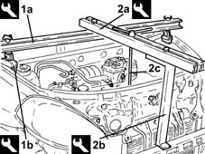
Applies to: engines: 1.4 16v; all production periods
Removing
RefittingPosition the vehicle on the ramp.
Ensure that the ignition key is in OFF position, then disconnect the battery negative terminal (-).
 | Name | Connector |
|---|---|---|
- | Battery |
Proceed with removal 1048A10 air cleaner filtering element - replace .
Proceed with removal 1072C44 exhaust manifold heat shield on bulkhead - r+r .
Proceed with removal 1072C16 exhaust manifold with catalytic converter - r r .
1. Undo the engine oil drain plug and drain the oil into a suitable container.
2. Undo the bolts fixing the manual gearbox and differential to the cylinder block/crankcase.
3. Undo the nuts (3a) and the bolts (3b) securing the crankcase sump.
4. Use the tool to cut the crankcase sump sealant.
| Name | Country |
|---|---|---|
4 | Blade | 1.870.718.000 |
5. Remove the crankcase sump.
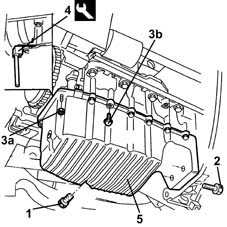
Applies to: engines: 1.3 JTD; all production periods
Removing
RefittingPosition the vehicle on the ramp.
Proceed with removal .
Proceed with removal 2110A60 manual gearbox/engine coupling bracket - r+r .
1. Undo the drain plug on the engine sump and drain the oil fully into a suitable container.
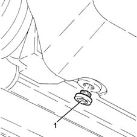
Applies to: engines: 1.2 8v; all production periods
1. Undo the engine oil drain plug and drain the oil into a suitable container.
2. Undo the nuts (2a) and the bolts (2b) fixing the crankcase sump.
3. Use the tool to cut the crankcase sump sealant.
| Name | Country |
|---|---|---|
3 | Blade | 1.870.718.000 |
4. Remove the crankcase sump.
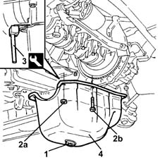
Applies to: engines: 1.2 16v; all production periods
Remove the crankcase sump as described below.
1. Undo the bolts (1a) and remove the bracket between the manual gearbox/engine (1b) complete with bottom flywheel guard (1c).
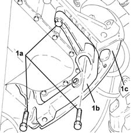
Applies to: engines: 1.4 16v; all production periods
Refitting
RemovingThoroughly clean the contact surfaces of crankcase sump and cylinder block of sealant residues.
Apply silicon sealant around the edge of the crankcase sump.
1. Refit the crankcase sump
2. Tighten nuts (2a) and bolts (2b) securing the engine block to the recommended torque.
 | Fastening | Component | Ø | Value (daNm) |
|---|---|---|---|---|
2a | Nut | OIL SUMP | M6 | 0.5 |
| Fastening | Component | Ø | Value (daNm) |
|---|---|---|---|---|
2b | Bolt | OIL SUMP | M6 | 1 |
3. Tighten the bolts fixing the manual gearbox and differential to the crankcase sump to the recommended torque.
| Fastening | Component | Ø | Value (daNm) |
|---|---|---|---|---|
3 | Bolt | MANUAL GEARBOX | M12 x 1.25 | (Engine crankcase sump side) 5.5 |
4. Tighten the engine oil drain plug to the specified torque.
| Fastening | Component | Ø | Value (daNm) |
|---|---|---|---|---|
4 | - | - | - | - |
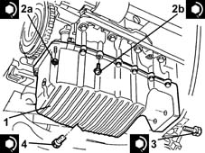
Applies to: engines: 1.3 JTD; all production periods
1. Undo nuts (1a) and bolts (1b) securing the oil sump to the crankcase.
2. Use the tool to cut the crankcase sump sealant.
| Name | Country |
|---|---|---|
2 | Blade | 1.870.718.000 |
3. Remove the crankcase sump.
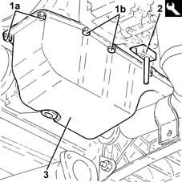
Applies to: engines: 1.2 8v; all production periods
Refitting
RemovingThoroughly clean the contact surfaces of crankcase sump and cylinder block of sealant residues.
Apply silicon sealant around the edge of the crankcase sump.
Refit the crankcase sump
Tighten the nuts and bolts securing the crankcase oil sump to the recommended torque.
| Fastening | Component | Ø | Value (daNm) |
|---|---|---|---|---|
- | Nut | OIL SUMP | M6 | 0.5 |
| Fastening | Component | Ø | Value (daNm) |
|---|---|---|---|---|
- | Bolt | OIL SUMP | M6 | 1 |
Tighten the engine oil drain plug to the specified torque.
| Fastening | Component | Ø | Value (daNm) |
|---|---|---|---|---|
- | - | - | - | - |
Place the flywheel protection back in its housing and fix it using the bolts.
Refit the exhaust manifold mounting bracket with catalytic converter and secure by tightening the bolt to the specified torque.
| Fastening | Component | Ø | Value (daNm) |
|---|---|---|---|---|
- | Bolt | MANUAL GEARBOX | M10 | (Bracket side) 4.5 ÷ 5.5 |
Proceed with refitting 2110A60 manual gearbox/engine coupling bracket - r+r .
Proceed with refitting 7055B66 Engine compartment DUST SHIELD protection in right front wheel arch - R.R. .
Proceed with refitting 1072C16 exhaust manifold with catalytic converter - r r .
Proceed with refitting 1072C44 exhaust manifold heat shield on bulkhead - r+r .
Proceed with refitting 1048A10 air cleaner filtering element - replace .
Refill the engine oil lubrication system 0010T11 engine oil check level and top up .
Remove the car from the ramps.
Applies to: engines: 1.2 16v; all production periods
1. Undo the engine oil drain plug and drain the oil into a suitable container.
2. Undo the nuts (2a) and the bolts (2b) fixing the crankcase sump.
3. Use the tool to cut the crankcase sump sealant.
| Name | Country |
|---|---|---|
3 | Blade | 1.870.718.000 |
4. Remove the crankcase sump.
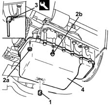
Applies to: engines: 1.4 16v; all production periods
Proceed with refitting 1072C16 exhaust manifold with catalytic converter - r r .
Proceed with refitting 1072C44 exhaust manifold heat shield on bulkhead - r+r .
Proceed with refitting 1048A10 air cleaner filtering element - replace .
Connect the negative (-) battery terminal.
Refill the engine oil lubrication system 0010T11 engine oil check level and top up .
Remove the car from the ramps.
Applies to: engines: 1.3 JTD; all production periods
Refitting
RemovingClean any sealant residues from the matching surfaces between the lower engine crankcase and the crankcase sump.
1. Apply a bead of recommended silicon sealant to the contact surfaces of the crankcase sump and the lower engine crankcase as illustrated in the diagram below.
N. A: There should not be any breaks in the sealant bead. The diameter of the sealant bead should be 3.5 0.5. mm
 | Type | Component | Name | Qty. |
|---|---|---|---|---|
1 | Sealant | OIL SUMP | LOCTITE 5900 | - |
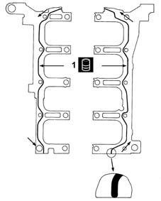
Applies to: engines: 1.2 16v; all production periods
Refitting
RemovingThoroughly clean the contact surfaces of crankcase sump and cylinder block of sealant residues.
Apply silicon sealant around the edge of the crankcase sump.
1. Refit the crankcase sump
2. Tighten nuts (2a) and bolts (2b) securing the engine block to the recommended torque.
| Fastening | Component | Ø | Value (daNm) |
|---|---|---|---|---|
2a | Nut | OIL SUMP | M6 | 1 |
| Fastening | Component | Ø | Value (daNm) |
|---|---|---|---|---|
2b | Bolt | OIL SUMP | M6 | 1 |
3. Tighten the engine oil drain plug to the specified torque.
| Fastening | Component | Ø | Value (daNm) |
|---|---|---|---|---|
3 | - | - | - | - |
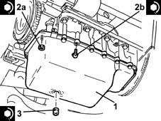
Applies to: engines: 1.3 JTD; all production periods
1. Place the crankcase sump (1a) back in its housing and secure it by tightening the bolts (1b) and the nuts (1c) to the recommended torque.
| Fastening | Component | Ø | Value (daNm) |
|---|---|---|---|---|
1b | Bolt | OIL SUMP | M6 | (Lower engine crankcase side) 0.8 ÷ 1.0 |
| Fastening | Component | Ø | Value (daNm) |
|---|---|---|---|---|
1c | Nut | OIL SUMP | M6 | (Timing cover side) 0.8 ÷ 1.0 |
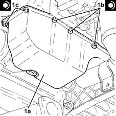
Applies to: engines: 1.2 16v; all production periods
1. Refit in its seating the bracket between the manual gearbox/engine (1a) and tighten the bolts (1b) to the specified torque.
| Fastening | Component | Ø | Value (daNm) |
|---|---|---|---|---|
1b | - | - | - | - |
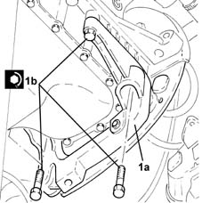
Applies to: engines: 1.3 JTD; all production periods
1. Tighten the crankcase sump drain plug to the recommended torque.
| Fastening | Component | Ø | Value (daNm) |
|---|---|---|---|---|
1 | - | ENGINE OIL DRAIN PLUG | M14 | (Crankcase sump side) 1.8 ÷ 2.2 |
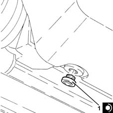
Applies to: engines: 1.2 16v; all production periods
Proceed with the refitting 2110A10 manual gearbox and differential - r + r
Proceed with refitting 1072C16 exhaust manifold with catalytic converter - r r .
Proceed with refitting 1072C44 exhaust manifold heat shield on bulkhead - r+r .
Proceed with refitting 1048A10 air cleaner filtering element - replace .
Proceed with refitting 5530B52 Battery DRIP TRAY/SUPPORT - R.R. .
Proceed with refitting 5530B10 battery - r+r .
Proceed with refitting 7055B90 Left front WHEEL ARCH LINER - R.R. .
Proceed with refitting 7055B91 Right front WHEEL ARCH LINER - R.R. .
Proceed with refitting 7055B66 Engine compartment DUST SHIELD protection in right front wheel arch - R.R. .
Proceed with refitting 4450B12 front or rear wheels (two) - r+r .
Refill the manual gearbox and differential 0010T41 MANUAL GEARBOX OIL - Check level and top up, if necessary .
Refill the engine oil lubrication system 0010T11 engine oil check level and top up .
Applies to: engines: 1.3 JTD; all production periods
Proceed with refitting 2110A60 manual gearbox/engine coupling bracket - r+r .
Refill the engine oil lubrication system 0010T11 engine oil check level and top up .
Proceed with refitting .
Remove the car from the ramps.
Topics linked from this page (15)
- 0010T11 engine oil check level and top up
- 0010T41 MANUAL GEARBOX OIL - Check level and top up, if necessary
- 1048A10 air cleaner filtering element - replace
- 1072C16 exhaust manifold with catalytic converter - r r
- 1072C44 exhaust manifold heat shield on bulkhead - r+r
- 2110A10 manual gearbox and differential - r + r
- 2110A60 manual gearbox/engine coupling bracket - r+r
- 4450B12 front or rear wheels (two) - r+r
- 5530B10 battery - r+r
- 5530B52 Battery DRIP TRAY/SUPPORT - R.R.
- 7055B66 Engine compartment DUST SHIELD protection in right front wheel arch - R.R.
- 7055B90 Left front WHEEL ARCH LINER - R.R.
- 7055B91 Right front WHEEL ARCH LINER - R.R.
- 7210E10 R.R. FRONT BUMPER
- A1B Battery ( BATTERY NEGATIVE )
Topics that link to this page (11)
- X12 ENGINE OIL LEAKS
- 1020B10 cover of timing system with chain drive - r + r replace oil seal and gasket
- 1020D14 front crank shaft oil seal cover - r + r and replace seals for versions with oil pump on crank shaft, timing side
- 1028H20 piston with connecting rod - r r
- 1032A12 CHAIN AND GEARS for timing system - R.R. for timing or Replacement.
- 1032B46 toothed drive pulley - r + r
- 1032B60 bolt pulley - r r
- 1032C40 Timing CHAIN TENSIONER PLATE - R.R.
- 1084B12 engine oil pump - r+r
- 1084B26 emgine oil intake duct - r r
- 1084B45 RIGID air supply PIPE between air-air heat exchanger and intermediate hose - R.R.